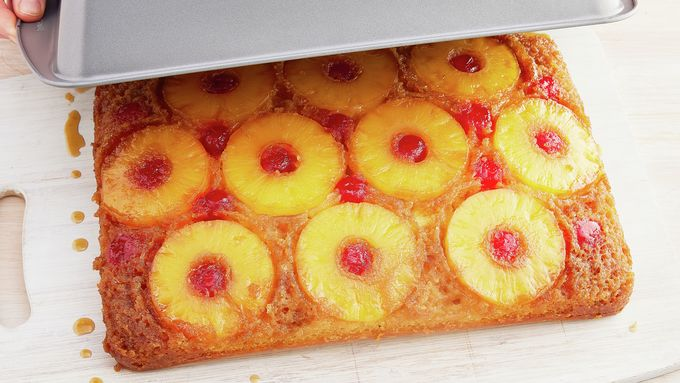

Pineapple Upside-Down Cake

Description
Much like pizza, pineapple does belong on cake. This is a great treat for fruit and sweets enjoyers alike. While it may not look like your average cake, it is a delicious dessert to show off when you feel like doing something a little different.
Ingredients
- 1/4 cup butter
- 1 cup packed brown sugar
- 1 can (20oz) pineapple slices in juice, drained, juice reserved
- 1 jar (6oz) cherries without stems, drained
- 1 box yellow cake mix (check mix for additional ingredients)
Steps
- Heat oven to 350 degrees F. In deep dish pan, melt butter and sprinkle brown sugar. Arrange pineapple slices on brown sugar, along with cherries. Press into brown sugar gently.
- Add water to reserved pineapple juice until you have 1 cup. Make cake batter from mix, substituting water for your new pineapple juice mixture. Pour over pineapples and cherries.
- bake 42-48 minutes. Immediately run knife around side of pan to loosen cake. Place heatproof serving plate upside down onto pan; turn plate and pan over. Leave pan over cake 5 minutes so brown sugar topping can drizzle over cake; remove pan. Cool for 30 minutes. Serve warm or cold, make sure to refrigerate.